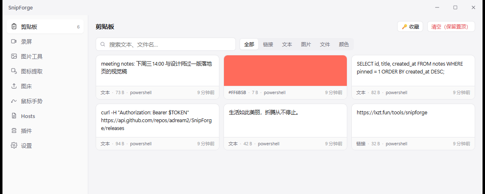
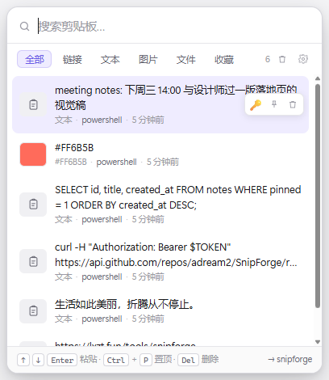
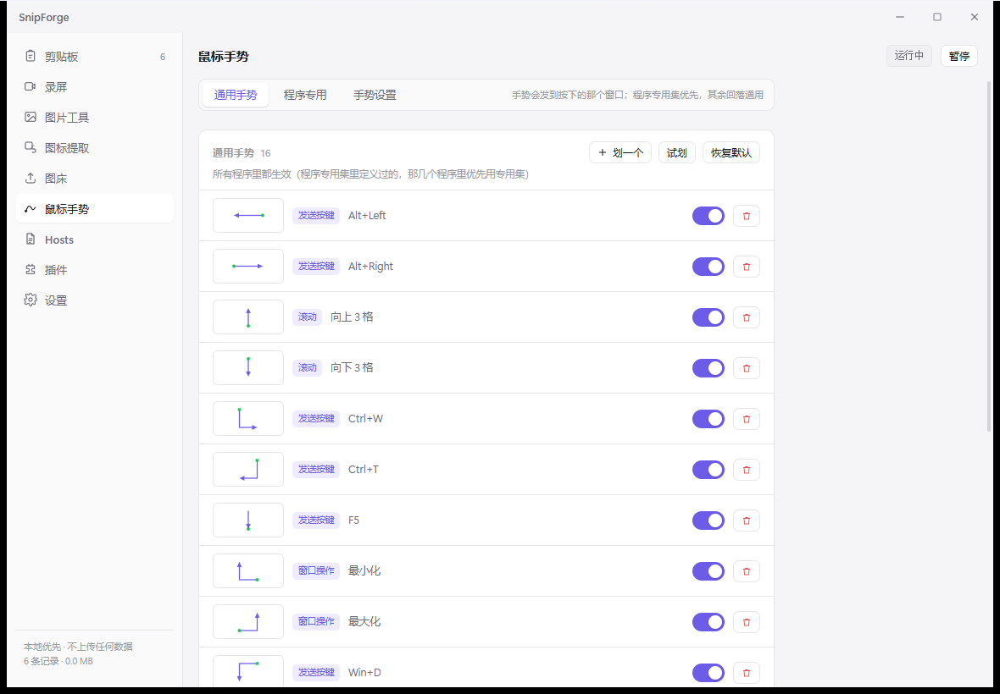
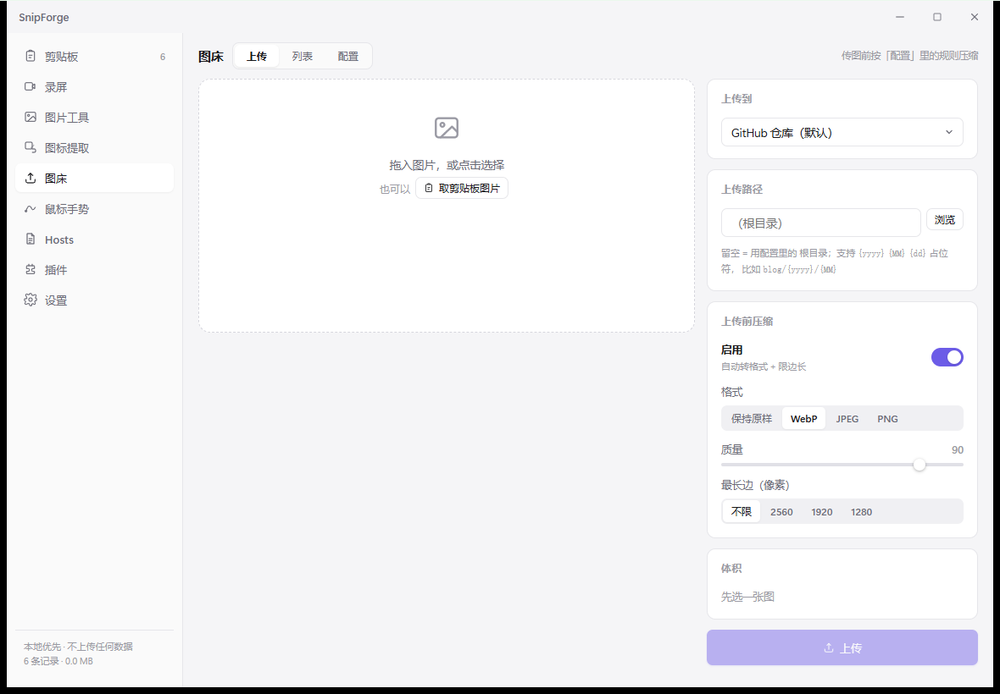
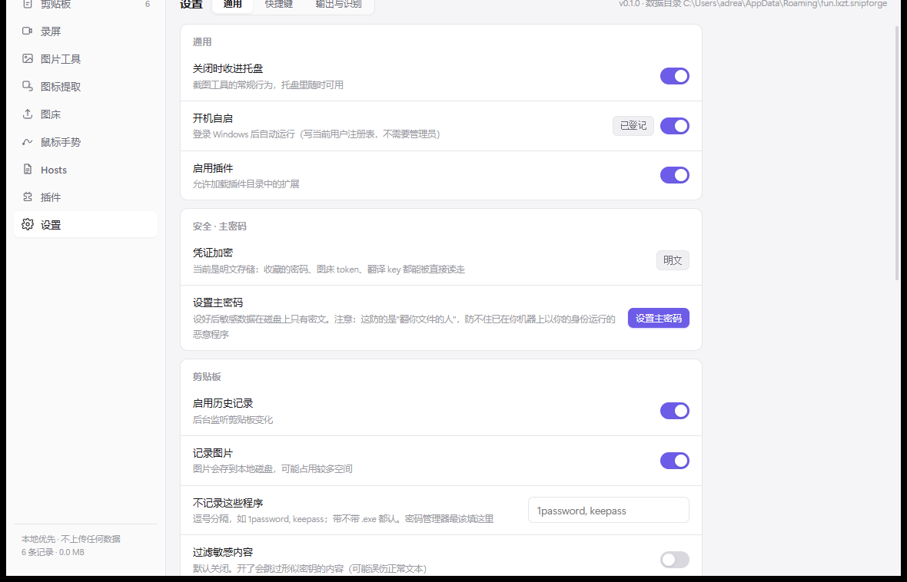

截图与标注
按下 Alt+Q 画面冻住：拖拽框选、单击选窗口、Ctrl 选整窗、 Ctrl+A 整屏、S 滚动长截图，全在同一个界面里选， 不用为每种截法记一个热键。
进编辑器后矩形、箭头、画笔、文字、序号、高亮、马赛克都有。 画完还能改：V 切选择工具，点中标注就能拖动，Delete 删掉。 取完之后做什么也能配 —— 进编辑器、直接复制、直接保存、钉在屏幕上。
标注、取字、贴图、上传、翻回三天前复制的那句话 —— 这些串在一条链上，拆成四个软件就断了。SnipForge 把它做成一条。

SnipForge 是一款面向 Windows 10 / 11 的开源桌面效率工具，把截图标注、OCR 取字、 贴图、图床、剪贴板历史、屏幕录制、图标提取这些平时要装四五个软件才凑齐的事， 收进一个常驻托盘的应用里。
它用 Rust + Tauri 2 + React 写成，安装包 2.86 MB，常驻内存约 27 MB， 不打包 ffmpeg、不需要 .NET 或 VC 运行库。装完默认两个快捷键：Alt+Q 截图， Alt+V 剪贴板。
%APPDATA%\fun.lxzt.snipforge不是功能列表堆叠，是同一套东西的四个入口。
按下 Alt+Q 画面冻住：拖拽框选、单击选窗口、Ctrl 选整窗、 Ctrl+A 整屏、S 滚动长截图，全在同一个界面里选， 不用为每种截法记一个热键。
进编辑器后矩形、箭头、画笔、文字、序号、高亮、马赛克都有。 画完还能改：V 切选择工具，点中标注就能拖动，Delete 删掉。 取完之后做什么也能配 —— 进编辑器、直接复制、直接保存、钉在屏幕上。
Alt+V 在光标旁弹出面板，选一条直接落到你原来那个窗口的光标处 —— 不是"复制了让你再按一次粘贴"。
文本、图片、文件、颜色全收，能按来源程序筛选、能搜索、能收藏； 密码类可以配合主密码用 Argon2id + AES-256-GCM 加密存档。 Win+V 可以接管（低级键盘钩子，立即生效，不用重启 explorer）。
视频（H.264 MP4）和 GIF 分开录。系统声音和麦克风同时录、自动混音， 不用装虚拟声卡；静音时段按视频时间轴补静音，所以音轨不会短一截、 也不会音画不同步。
摄像头能合成画中画：圆角描边、四角位置、大小比例、水平镜像。 编码走系统自带的 Media Foundation，不打包 ffmpeg —— 安装包只涨 40 KB。
GitHub、S3 兼容、SM.MS、自定义 HTTP、本地目录，写一个 JSON 就能接新图床 —— 声明式插件，不用改主程序。
另外还有：图标提取（exe / dll / 快捷方式 / APK / IPA，Android 自适应图标会合成背景+ 前景）、鼠标手势（画一个 S 就截图，能绑任何动作）、Hosts 可视化编辑（写入自动提权）、 图片格式转换与压缩。
没有悬浮教程，没有新手引导弹窗。所有东西都在该在的位置。


↓→↑← 这种符号一眼能认

现成的工具都不缺功能，缺的是把这些能力连起来。
| 工具 | 强项 | 断在哪 |
|---|---|---|
| ShareX | 功能全到夸张 | 界面像 2008 年，配置项几百个，新手劝退 |
| PicX | 图床接得最全 | 只有图床，没有截图和剪贴板 |
| QuickShot | 截图体验一流 | 只管截图，剪贴板和图床得另开软件 |
| TieZ | 剪贴板做得深 | 只管剪贴板 |
全部可以在设置里改，冲突了会直接标出来。
装之前最常被问到的八个问题，答案都在下面。
是。MIT 许可开源，源码在 GitHub 公开，安装版和绿色版都能免费下载。 没有付费版、没有功能墙、没有广告和内购。
目前只支持 Windows 10 和 11（x64）。截屏、录屏、剪贴板、鼠标手势都直接调用 Windows 的系统接口，跨平台要重写这些底层实现，暂时不在计划内。
不会。截图、OCR、剪贴板、录屏全部在本机处理，程序没有自己的服务器。只有两种情况会联网： 你主动点上传时，图片才发到你配置的图床；你允许检查更新时，才访问 GitHub 查一次版本号。
不需要。录屏用 Windows 自带的 Media Foundation 编码，安装包只有 2.86 MB， 不打包 ffmpeg，也不需要 .NET 或 VC 运行库。OCR 引擎按需下载，不装不影响其他功能。
ShareX 功能更多、可配置项也更多，但界面和设置项对新手不友好。SnipForge 把截图、标注、 剪贴板、图床、录屏串成一条流程，默认配置就能直接用，界面贴近现代 Windows。 两者都开源免费，可以同时装上对比。
在「设置 → 快捷键」里点一下输入框，直接按下想用的组合键即可，改完立即生效。 被其他程序占用的组合会标注「未生效」，换一个就行。
全部在 %APPDATA%\fun.lxzt.snipforge 下：配置、剪贴板历史、日志、临时文件。
整个目录复制到新机器同一位置就完成迁移；用主密码加密过的条目离开这台机器解不开。
不需要。安装版装在当前用户目录，开机自启写的是当前用户注册表。只有编辑 Hosts 文件时会单独请求一次提权，其余功能都以普通权限运行。
由仓库 CHANGELOG.md 自动同步，发版即更新 —— 这里就是全部变化，没有"性能优化与若干修复"。
"…\snipforge.exe" --silent。登录 Windows 后只驻留托盘图标， 不再弹主界面抢焦点；主窗口照常创建，热键、托盘、剪贴板监听全都正常， 点托盘或按热键随时亮出来--silent 的写法，不用手动重开开关21 个本地工具，侧边栏「开发工具」进入，手势里也能挂一条。
plugins/devkit.plugin.json，算法在前端注册表 src/lib/devkit/。 清单一改，导航和工具列表跟着变；插件页可以整体开关这个工具箱crypto 对过 8 组输入； 密码用拒绝采样 + 保证每类字符至少一个；进制转换走 BigInt，超过 2^53 不丢精度step 才记一个 tokenD,R = 先下后右，DR = 一条右下斜线 —— 不分开的话 这两种手势会撞成同一个串DR,UR 和 DR,U,UR 都能命中 V@ 前缀、自定义笔画全部去掉。 S / H 改用方向串写（S = DL,DR,DL，H = D,R,D），行为从"黑盒猜" 变成"画什么就是什么"DR/DL 两条斜线 + 若干组合按实际使用习惯重排，配置迁移 v6 会重置绑定：
| 手势 | 动作 | 手势 | 动作 |
|---|---|---|---|
| ↑ | 复制 | ↓ | 粘贴 |
| → | 前进 | ← | 后退 |
| ↓→ | 关闭窗口 | ↓← | 关闭同程序其他窗口 |
| ↗ | 最大化/还原 | ↙ | 最小化 |
| ↖ | Esc | ↘ | Del |
| ←↓→↓← | 搜索选中文字 | ↑→↓← | Ping 选中地址 |
| ↓↑→↓ | 编辑 hosts | ↓→↑← | 贴图 |
| ↓←↑→ | OCR | →↙→ | 排除当前程序 |
| ↙↘↙ | 截图 |
浏览器专用集：↑ 页顶 / ↓ 页底 / ↘↗ 刷新 / ↗↘ 强制刷新 / ↓→ 关标签 / ↑→ 右侧标签 / ↑← 左侧标签 / ↓→↓ 主页。
新增三个动作：
WM_CLOSE， 当前窗口留着。没有标题的多是隐藏辅助窗口，关掉会伤到正在运行的程序Ctrl+C，180ms 后读剪贴板，开 BingCtrl+C 后只保留域名/IP/端口的合法字符， 直接 spawn ping —— 不经过任何 shell，没有命令注入面path_to_dir 已经能切出一个 token（R/D/…），而单 token 手势是精确匹配的 —— 于是"点一下"变成执行动作，菜单自然不出来。 现在位移 < 48px 一律按单击补发，不看向量算出了什么SendInput 的返回值和 错误码）。以后"补发没生效"能一眼看出是没发出去，还是发到了别的窗口dir8 / RDP / 折线简化）搬进 snipforge_core::stroke， 补 8 条单测。这块以前一条测试都没有 —— 而"画 3 段出 5 个 token" 正是这里出过的 bug。现在覆盖：8 个扇区、22.5° 边界、直线单 token、 直角两 token、↙↘↙ 三段、锯齿抖动仍是一段、相邻同向合并、过短轨迹不出 tokenstep 字段已废弃：RDP 之后"几段就是几个 token"，本来按"走够多少像素 算一次转向"的 step 不再参与任何判定。从 Snapshot 和 on_move 里删掉， 配置字段保留但注明废弃（删了会让旧配置文件丢字段）gesture_trace 去掉没用的 step 参数（前后端一起改）docs/FEATURES.md 还在写"画一个 S 截图""@S/@H 形状命名空间""接管右键按下开关""$P 点云匹配"—— 这些都是已经删掉的东西。 整章按 8 方向重写，含默认手势表和三条匹配规则；README.md 的 "画一个 S 就截图"一并改掉一轮完整代码审计，按"会不会在钩子线程里出事"这条线逐层过：
handle_event 每个 mousemove 都拿配置锁 + clone() 一个 String。 这个函数就在钩子线程里同步跑，等于持续分配内存。改为配置变更时写进 AtomicBool + RwLock<String>，热路径只做一次原子读on_move 在轨迹点数封顶后每个事件都做全量 RDP。pts 到 1500 后长度 不再变，1500 % 6 == 0 让重算条件恒成立 —— 越划越卡。改成只有真的压入 新点时才重算match_action 每次方向变化都整体 clone 专用手势集（连所有绑定的轨迹点）。 改成按引用索引inject_click 在钩子回调里调 SendInput。整理成整对发送都在工作线程 里做，回调只负责"决定要补点一下"WM_CLOSEpath_to_dir 里有两处 unwrap()（包围盒）。虽然前面对点数有保护， 但这段跑在钩子线程，panic 会连带整个输入链。改成单次遍历算包围盒on_move 的兜底之外，on_down 也会处理"上一次抬起丢了"的残留状态， 先把旧轨迹收掉再开新的gesture.rs 顶部过时的模块文档（还在描述已删除的点云形状识别、 四个方向）和 window.rs 里一段粘错位置的注释↓↑→↓ 打开的是主页，而不是编辑 hosts。原因是匹配顺序： 先查浏览器专用集，里面 ↓→↓（主页）只要"差一个 token"就算命中， 于是把通用集里精确命中的 ↓↑→↓ 挡住了。现在改成：↓→ 是关窗口，↓→→ 不该命中它）； 三段以上才允许差一个↓→↓ 会误触 ↓↑→↓snipforge_core::pattern。主 crate 的测试 harness 在本机 起不来（STATUS_ENTRYPOINT_NOT_FOUND），所以 gesture.rs 里的测试从来没跑过， 其中两条断言一直是错的（normalize("D-X,R") 和一处编辑距离）。搬进 core 后 36 项单测全绿，这两条也一并修正RButtondown、吞掉 RButtonup 之后，GetAsyncKeyState(VK_RBUTTON) 会一直返回 DOWN。后果是目标窗口一直以为右键按着：捕获不放、 菜单卡住、左键跟着失灵，得再点一次右键才恢复。 规则：按下和抬起必须成对处理，要么都放行，要么都吞掉swallowDown 开关（配置项和界面都去掉）：两种模式只有一种是对的， 留个开关只会让人选到错的那个↓→ 既是「向下再向右」，又恰好是字母 L 的写法），全字母参与识别时 每次「下再右」都被判成画字母。更要紧的是 RLR（画 Z 形）是「排除当前 程序」的默认绑定，会被 @Z 吃掉，排除功能直接失效。 现在只有 S / H 参与内置识别；其他字母在「鼠标手势」页画一遍存成自定义 手势即可 —— 只认你加的那一个，不干扰任何方向手势↓→ 时浮标报「未绑定」，但松手却执行了动作。原因：↓→ 的形状正好 等于字母 L 的模板（竖下 + 横右），被形状识别抢成 @L。执行层有回落 （@L 没绑就按方向串 DR 找），浮标层却只查 @L —— 显示和执行用了两套规则。 现在两处共用同一套回落，浮标显示的永远是真正会执行的那个动作对照 TieZ 的剪贴板实现补齐三块：
HTML Format，粘贴时同时写 CF_UNICODETEXT 和 HTML —— 从网页复制的表格、 带样式的文字，粘到 Word / 邮件 / 飞书里格式不丢；记事本、终端这类只认纯文本的 地方照常能粘。去重仍按纯文本 hash：同一段话复制两次不该变成两条历史138**8000 / 110101****1234）。只影响显示**，选中后写进剪贴板的 还是原文。面板和主窗口都生效 —— 投屏、录屏、旁边有人的时候不至于把证件号念出来Alt+Enter，丢掉网页带来的字体颜色等样式， 只把文字塞过去。配合上面的富文本保留，两种场景各取所需不做的事：WebDAV / MQTT 跨设备同步。这个工具的定位是本地常驻，剪贴板历史里 经常有密码和证件号，不上传比"能同步"重要。
以前只能认方向（←→↑↓ 及其组合）和 S / H 两个形状，画 W、V、B、M 一律落到"未绑定"。原因是形状和方向串共用同一批字符：D 既是"向下划" 又是"字母 D"，加一个字母就得跟方向抢名字。
现在按主流工具的做法拆开：
I 是一条竖线、等于方向串；O 是闭合圆；Q 一笔画不自然）@ 前缀，和方向串分处两个命名空间：@W 是字母，DR 是方向。 用户手写 W 也认（自动补前缀）@Z，没绑就落回 RLR， 「画 Z 排除当前程序」照常工作，不需要为每个字母补绑定S / H 自动改成 @S / @HS 补了两个斜写模板（±10°）：点云不抗旋转，以前斜着写 S 认不出snipforge-core，第一次有了真正能跑的测试 （letters_recognize_themselves：每个字母 6 个抖动/缩放变体必须认回自己）反馈「划起来不流畅、不灵活，和其它手势工具差距极大」。定位到四个实现问题， 全部在轨迹层和默认参数上，与 UI 框架无关：
CreateFontW 一次，字体面查询就是几毫秒docs/ADR-001-ui-stack.md：评估 Rust + egui 迁移，结论是不迁。 内存 27 MB 不是瓶颈，且 egui 的立即模式对全屏覆盖层是负优化； 手势卡顿的根因在 GDI 重绘方式，换框架解决不了。文档里留了重新评估的触发条件---
第一个预览版。Windows 10/11 x64。
Alt+Q 打开冻结画面，拖拽框选区域、单击选窗口、Ctrl 选整窗、 Ctrl+A 整屏、S 滚动长截图V 切选择工具，点中标注可拖动、Delete 删除，Esc 先退选中再退编辑器GetClipboardSequenceNumber 变更检测Alt+V 面板：搜索、分类、收藏、来源程序识别；Win+V 可用键盘钩子接管Ctrl+Alt+R / Ctrl+Alt+GHTTPS_PROXY / ALL_PROXY 环境变量commands/about.rs 统一维护，界面只传名字，不再散落硬编码 URLsitemap.xml、robots.txt、1200×630 分享图SoftwareApplication / FAQPage / WebSite / Organization）、llms.txt， 页面补「SnipForge 是什么」事实表与常见问题八问，便于搜索引擎与 AI 问答引擎直接引用npm run site:check（上线前自检）与 npm run site:ping（IndexNow 主动推送）更早的版本历史见 CHANGELOG.md。
两种形态，功能完全一样。数据都存放在 %APPDATA%，换包不丢配置。
Windows 10 / 11 · x64 · 当前为预览版，接口与配置项可能变动。
没有代码签名，首次运行 SmartScreen 会拦一下（更多信息 → 仍要运行）。 不放心就下绿色版，或者自己编译 —— 构建步骤见仓库里的 DEVELOPMENT.md。